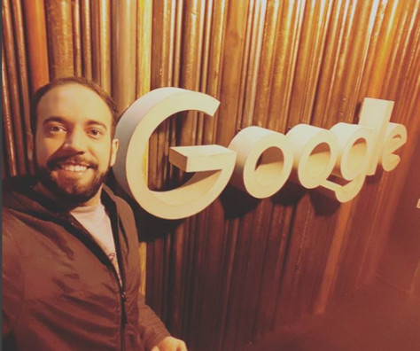

Curious, thirsty to learn and self-taught to gain knowledge. I do not let myself be accommodated in time. Always learning and modernizing.
More than 6 years with web systems development and more than 3 years with mobile apps.
Experience with agile methodology (SCRUM), where I already obtained SCRUM FUNDAMENTALS CERTIFIED certification for better team management, tasks and projects in companies.